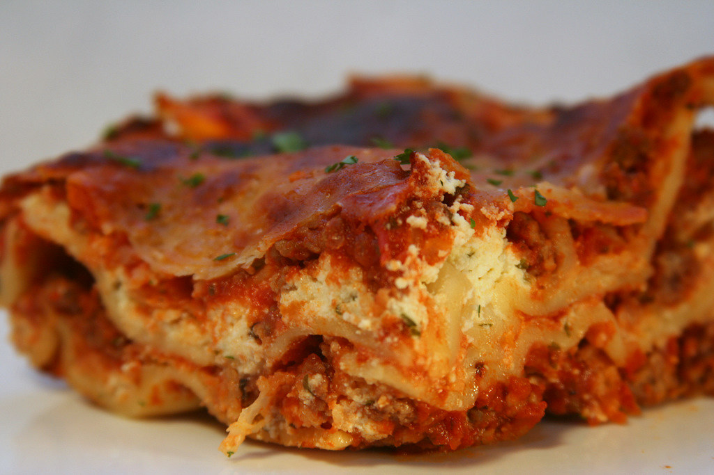

Lasagna
back to Recipes list

Cheesy Gourmet Lasagna
perfectly balanced Lasagna, made with blue crystal goat cheese, and meteor bull ground beef
List of ingredients
- shining crystal blue goat cheese
- metal meteor bull meat
- purple ranch sauce
- master material color changer
Steps:
- pet the goat and ask nicely for its milk
- sneak behind the bull and take a bite off its tail secretly
- juice baby jelly fish and extract the purple ranch
- acquire master material color changer from the item shop
- assemble all together
and Voilà!! here you have it! the special Gourmet Lasagna!